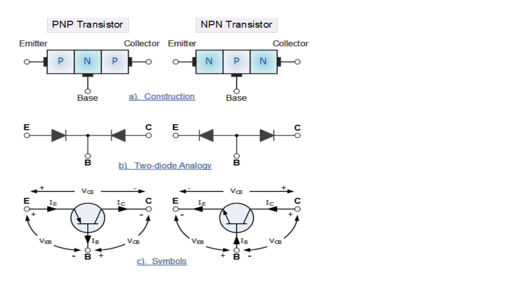
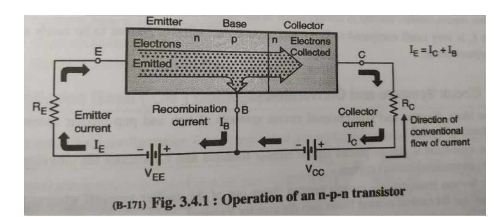
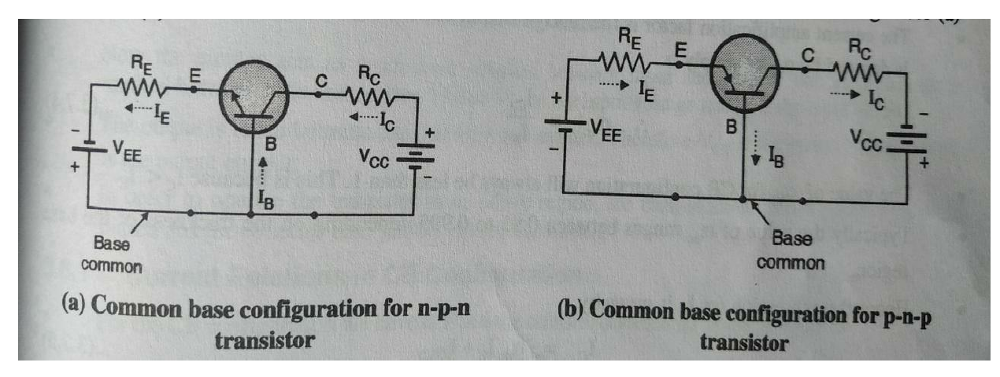
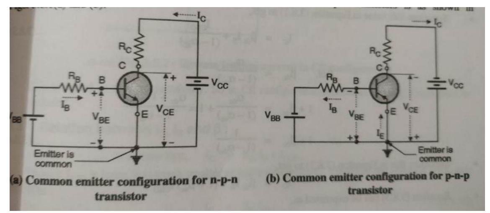
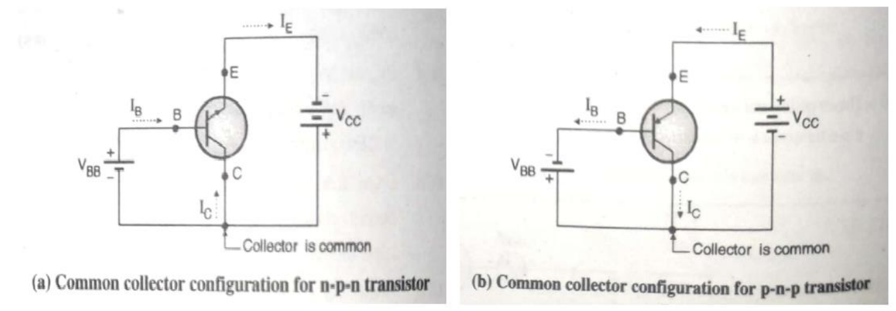

4.1 Transistor — Introduction & Classification
The transistor is the main building block element of electronics. It is a semiconductor device, and it comes in three general types: the Bipolar Junction Transistor (BJT), Field Effect Transistor (FET) and Metal Oxide Semiconductor Field Effect Transistor (MOSFET).
| Term | Stands for |
|---|---|
| BJT | Bipolar Junction Transistor |
| FET | Field Effect Transistor |
| MOSFET | Metal Oxide Semiconductor Field Effect Transistor |
BJT (Bipolar Junction Transistor)
The word "transistor" is an acronym of two terms: "transfer" + "resistor". It means that the internal resistance of the transistor transfers from one value to another, depending on the biasing voltage applied to it. Thus, it is called a transfer resistor, i.e. TRANSISTOR.
- A bipolar transistor (BJT) is a three terminal semiconductor device in which the operation depends on the interaction of both majority and minority carriers, i.e. both electrons and holes — hence the name bipolar.
- If a transistor's operation depends only on majority carriers — i.e. either electrons or holes, not both — it is called unipolar, e.g. the FET (Field Effect Transistor).
- A BJT is a current-controlled device: the output current (flowing between two terminals) is controlled by the input current flowing through the third terminal. A FET, by contrast, is a voltage-controlled device: its output current is controlled by an input voltage rather than an input current.
- This is the basic principle of the BJT — it can be used as an amplifier and as a logic switch.
- A BJT consists of three terminals: Collector (C), Base (B), Emitter (E).
4.2 Construction of BJT
A P-N junction is represented by a diode; therefore, the P-N-P and N-P-N transistors are equivalent to two diodes connected back-to-back.
- PNP Transistor: a thin layer of N-type silicon is sandwiched between two layers of P-type silicon.
- NPN Transistor: a thin layer of P-type silicon is sandwiched between two layers of N-type silicon.

Fig 4.1 — Construction, two-diode analogy and circuit symbols of PNP and NPN transistors
Area of the Three Regions — C > E > B
Doping Level — E > C > B
Junctions
There are two junctions in a transistor:
- The junction between the base layer and the emitter layer is called the base-emitter junction, or B-E junction.
- The junction between the collector layer and the base layer is called the collector-base junction, or C-B junction.
Symbol
The arrow in the circuit symbol always shows the direction of conventional current flow between the base terminal and the emitter terminal. The direction of the arrow always points from the positive P-type region to the negative N-type region for both transistor types — exactly the same convention as for the standard diode symbol.
4.3 Working Principle of BJT
The working of a BJT is explained below for an N-P-N transistor; a P-N-P transistor works in exactly the mirror-image way, with holes as the majority carriers instead of electrons, and all supply polarities reversed.

Fig 4.2 — Fig. 3.4.1: Operation of an N-P-N transistor
- The forward bias at the B-E junction reduces the barrier potential and causes electrons to flow from the n-type emitter to the p-type base.
- Holes also flow from the p-type base to the n-type emitter, but as the base is more lightly doped than the emitter, almost all the current flowing across the B-E junction consists of electrons entering the base from the emitter. Hence, electrons are the majority carriers in an n-p-n transistor.
- Some of the electrons entering the base region do not reach the collector region. Instead, they flow out of the base terminal via the base connection, due to recombination. As the base region is very thin and lightly doped, there are very few holes available for recombination — hence about 2% of the electrons flow out of the base.
- The remaining 98% of the electrons cross the reverse-biased collector junction to constitute the collector current. They cross the collector region and are collected by the supply VCC.
This means the emitter current is always equal to the sum of the collector current and the base current. As IB is very small compared with IE, we could say that IE ≈ IC.
Current Amplification Factors
Since a transistor's output current is controlled by its input current, two ratios are used to describe how effectively it does this:
- DC current gain α (alpha), used in the common base configuration: α = IC / IE. Since IC is always slightly less than IE, α is always less than 1 (typically 0.95 to 0.99).
- DC current gain β (beta), used in the common emitter configuration: β = IC / IB. Since IB is very small, β is large (typically 20 to 500) — this is why the common emitter configuration gives high current gain.
The two are related by: β = α / (1 − α), and α = β / (1 + β).
4.4 Operating Regions of BJT
A BJT is capable of operating in four different regions, depending on the way in which it is biased:
- Cut off region (transistor is OFF)
- Saturation region (transistor is fully ON)
- Forward active region (transistor works as an amplifier)
- Reverse (inverse) active region
| Region of Operation | Base-Emitter Junction | Collector-Base Junction | Application |
|---|---|---|---|
| Cut off region | Reverse bias | Reverse bias | Open switch |
| Forward active region | Forward bias | Reverse bias | Amplifier |
| Saturation region | Forward bias | Forward bias | Closed switch |
| Reverse active region | Reverse bias | Forward bias | Attenuator |
- Cut off: both junctions are reverse biased, so (ideally) no current flows at all — the transistor behaves like an open switch between collector and emitter.
- Saturation: both junctions are forward biased, so maximum current flows and the voltage across the transistor (VCE) becomes very small — the transistor behaves like a closed switch.
- Forward active: the BE junction is forward biased and the CB junction is reverse biased — this is the normal condition used for amplification, where IC = β × IB.
- Reverse active: the roles of emitter and collector are effectively interchanged (BE reverse biased, CB forward biased). The transistor still conducts, but far less efficiently than in forward active mode, so this region is rarely used deliberately in practice.
The common terminal between the input and output ports can be the base, emitter or collector. Depending on which terminal is made common, there are three possible configurations of the transistor:
- Common Base (CB) configuration
- Common Emitter (CE) configuration
- Common Collector (CC) configuration
4.5.1 Common Base (CB) Configuration
The input is applied between the emitter and the base. The base acts as the common terminal between the input and output ports. The input voltage is therefore VEB and the input current is IE. The output is taken between the collector and the base; therefore the output voltage is VCB and the output current is IC.

Fig 4.3 — Common base configuration for (a) n-p-n and (b) p-n-p transistors
- Common terminal: Base
- Input current: IE | Output current: IC
- Input voltage: VEB | Output voltage: VCB
- Current gain: αdc (less than one)
- Voltage gain: medium
- Input resistance: very low
- Output resistance: very high
4.5.2 Common Emitter (CE) Configuration
The input is applied between the base and the emitter. The emitter acts as the common terminal between the input and output ports. The input voltage is therefore VBE and the input current is IB. The output is taken between the collector and the emitter; therefore the output voltage is VCE and the output current is IC. To operate the transistor in the active region, the base-emitter junction is forward biased and the collector-base junction is reverse biased.

Fig 4.4 — Common emitter configuration for (a) n-p-n and (b) p-n-p transistors
- Common terminal: Emitter
- Input current: IB | Output current: IC
- Input voltage: VBE | Output voltage: VCE
- Current gain: βdc (high)
- Voltage gain: medium
- Input resistance: moderate (≈ 1.1 kΩ)
- Output resistance: high (≈ 40 kΩ)
- Applications: amplifier
4.5.3 Common Collector (CC) Configuration
The input is applied between the base and the collector. The collector acts as the common terminal between the input and output ports. The input voltage is therefore VBC and the input current is IB. The output is taken between the collector and the emitter; therefore the output voltage is VCE and the output current is IE. To operate the transistor in the active region, the base-emitter junction is forward biased and the collector-base junction is reverse biased.

Fig 4.5 — Common collector configuration for (a) n-p-n and (b) p-n-p transistors
- Common terminal: Collector
- Input current: IB | Output current: IE
- Input voltage: VBC | Output voltage: VCE
- Current gain: unity
- Voltage gain: medium
- Input resistance: high
- Output resistance: low
4.5.4 Comparison of Configurations
| Parameter | Common Base (CB) | Common Emitter (CE) | Common Collector (CC) |
|---|---|---|---|
| Common terminal | Base | Emitter | Collector |
| Input current | IE | IB | IB |
| Output current | IC | IC | IE |
| Input voltage | VEB | VBE | VBC |
| Output voltage | VCB | VCE | VCE |
| Current gain | αdc (< 1) | βdc (high) | Unity |
| Voltage gain | Medium | Medium | Medium |
| Input resistance | Very low | Moderate (≈1.1 kΩ) | High |
| Output resistance | Very high | High (≈40 kΩ) | Low |
| Typical application | High-frequency circuits | Amplifier | Buffer / impedance matching |
4.6 Applications of Transistor
Building on the operating regions and configurations studied above, a BJT is used in three broad ways: